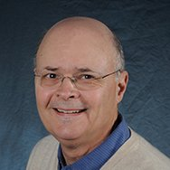
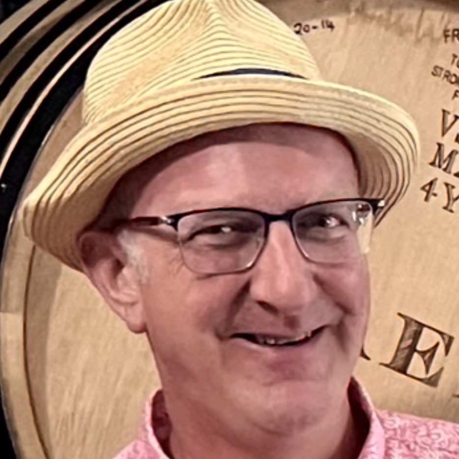
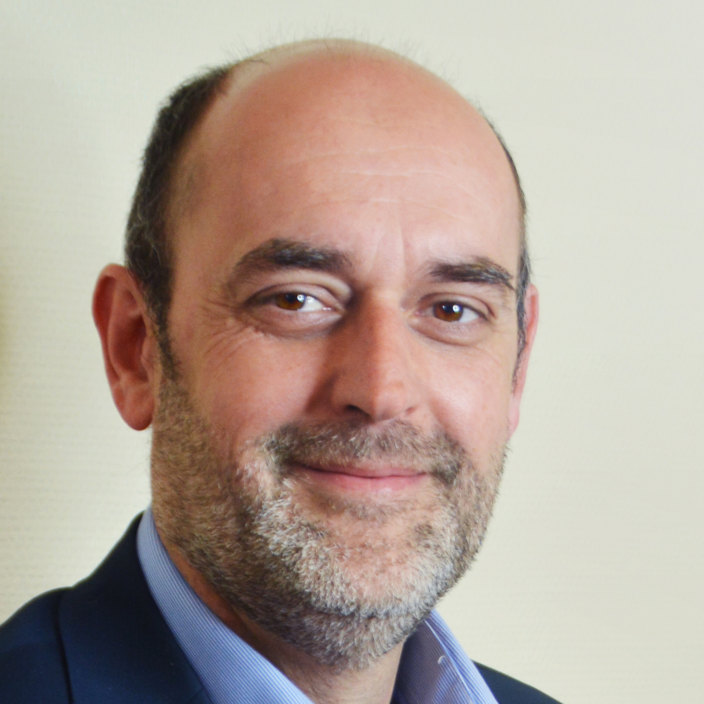
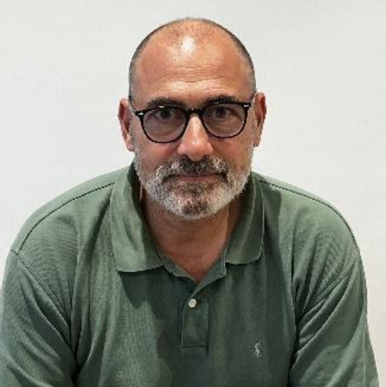

Welcome to AARS Online
The aminoacyl-tRNA synthetases (AARS) are a large group of enzymes that attach amino acids to their cognate tRNA. They implement the genetic code in all living systems in all domains of life - the bacteria, archaea, and eukaryota - plus mitochondria and chloroplasts, and there are even certain viruses that have AARS genes. The AARS also moonlight in various non-translational activities and are linked to many genetic disorders. The evolution of Class I and Class II AARS can be traced back earlier than the last universal common ancestor 3-4 billion years ago.AARS Online is a curated database showcasing a taxonomically diverse selection of AARS sequences and structures.
- Written and maintained by the AARS research community
-
Enzymes from
Bacteria
 ,
Archaea
,
Archaea  ,
Eukaryotes
,
Eukaryotes  ,
Organelles
,
Organelles  , and
Viruses
, and
Viruses 
-
Contains protein structures with direct experimental support
 and AlphaFold models
and AlphaFold models 
- Seamlessly navigate between protein sequences and structures with a user-friendly interface
- Download curated multiple sequence alignments and phylogenetic trees
- Spot an issue? Start a discussion or report an issue on GitHub using the links at the bottom of each page
Curation team
-
Jordan Douglas
Administrator Jordan Douglas is a Research Fellow at the University of Auckland, New Zealand. His research interests lie in phylogenetics, virus evolution, and the origin of genetic coding through the lens of the aminoacyl-tRNA synthetases. View profile.
-
Peter Wills
Curator Peter Wills is an emeritus theoretical biologist at the University of Auckland. His research focuses on the origin of genetic coding as a reflexive interplay between processes of chemistry and computation, each guiding the other through levels of increasing complexity and specificity, still visible in the phylogeny of AARS. -
Charles Carter Jr.
Curator  Charlie Carter studied TrpRS mechanisms based on crystal structures. His studies of AARS urzymes—models for the ancestral AARS that first enforced the genetic code—helped to validate the Rodin and Ohno bidirectional coding hypothesis. He and Peter Wills then showed how base-paired AARS ancestry also could explain the substrate binding differences needed for a binary coding alphabet. -
Marie Sissler
Curator  Marie Sissler is a Research Director at CNRS - Strasbourg University, France.
She works on diverse aspects of mitochondrial RNA biology.
She is particularly interested in mitochondrial aminoacyl-tRNA synthetases in diverse biological models such as humans and trypanosomatids, under healthy and pathological contexts.
Lab website.
Marie Sissler is a Research Director at CNRS - Strasbourg University, France.
She works on diverse aspects of mitochondrial RNA biology.
She is particularly interested in mitochondrial aminoacyl-tRNA synthetases in diverse biological models such as humans and trypanosomatids, under healthy and pathological contexts.
Lab website.
-
Oscar Vargas-Rodriguez
Curator  Oscar Vargas-Rodriguez is an Assistant Professor at the University of Connecticut School of Medicine, USA. His research focuses on understanding how aminoacyl-tRNA synthetases and tRNAs regulate translational fidelity and its interplay with cellular homeostasis.
Lab website.
Oscar Vargas-Rodriguez is an Assistant Professor at the University of Connecticut School of Medicine, USA. His research focuses on understanding how aminoacyl-tRNA synthetases and tRNAs regulate translational fidelity and its interplay with cellular homeostasis.
Lab website.
-
Henna Tyynismaa
Curator  Henna Tyynismaa is a Professor in medical molecular genetics at the University of Helsinki, Finland. She is interested in the role of aminoacyl-tRNA synthetases in human diseases.
Lab website.
Henna Tyynismaa is a Professor in medical molecular genetics at the University of Helsinki, Finland. She is interested in the role of aminoacyl-tRNA synthetases in human diseases.
Lab website.
-
John Perona
Curator John Perona served as Professor of Biochemistry at UCSB (1994-2011) and PSU (2011-2024). John writes the Earthward newsletter on Substack and is author of From Knowledge to Power: The Comprehensive Handbook of Climate Science and Advocacy. He investigates how advances in science and technology can be incorporated into policymaking, focusing on climate change and the transition to a renewable energy economy. View website. -
Haissi Cui
Curator  The Cui lab studies mammalian aminoacyl-tRNA synthetases. They strive to explore how the localization of aminoacylation is controlled by developing chemical tools, employing biochemical methods, and studying cellular and animal models. Haissi's favorite aminoacyl-tRNA synthetase is ArgRS.
Lab website.
The Cui lab studies mammalian aminoacyl-tRNA synthetases. They strive to explore how the localization of aminoacylation is controlled by developing chemical tools, employing biochemical methods, and studying cellular and animal models. Haissi's favorite aminoacyl-tRNA synthetase is ArgRS.
Lab website.
-
Frederic Fischer
Curator  Frederic Fischer is an Associate Professor in biochemistry and molecular biology at the University of Strasbourg, France. He is interested in non-canonical utilizations of aminoacyl-tRNAs and in particular in aminoacyl-tRNA transferases that reroute them away from protein synthesis to introduce aminoacyl modifications in various macromolecules in prokaryotes and eukaryotes.
Lab website.
Frederic Fischer is an Associate Professor in biochemistry and molecular biology at the University of Strasbourg, France. He is interested in non-canonical utilizations of aminoacyl-tRNAs and in particular in aminoacyl-tRNA transferases that reroute them away from protein synthesis to introduce aminoacyl modifications in various macromolecules in prokaryotes and eukaryotes.
Lab website.
-
Michael Ibba
Curator  The Ibba lab focuses on understanding the mechanisms that determine how cells ensure the accurate translation of the genetic code, and how changes in the underlying processes impact cellular health and contribute to microbial pathogenesis and antibiotic persistence. Lab website. -
Claudia Alvarez Carreño
Curator  Claudia Alvarez Carreño is a Newton International Fellow at University College London.
Claudia investigates the evolution of ancient proteins using bioinformatics.
Her research seeks to uncover deep relationships among proteins involved in the central dogma of molecular biology.
View profile.
Claudia Alvarez Carreño is a Newton International Fellow at University College London.
Claudia investigates the evolution of ancient proteins using bioinformatics.
Her research seeks to uncover deep relationships among proteins involved in the central dogma of molecular biology.
View profile.
-
Jiqiang Ling
Curator  Jiqiang (Lanny) Ling is an Associate Professor at the University of Maryland, College Park, USA.
His research focuses on the molecular basis of the protein synthesis machinery and its disease connections.
His work on aminoacyl-tRNA synthetases covers the mechanisms, regulation, and physiological roles of AARS editing, disease-causing mutations in alanyl- and threonyl-tRNA synthetases, and the evolution of threonyl-tRNA synthetase and tRNAThr.
View profile.
Jiqiang (Lanny) Ling is an Associate Professor at the University of Maryland, College Park, USA.
His research focuses on the molecular basis of the protein synthesis machinery and its disease connections.
His work on aminoacyl-tRNA synthetases covers the mechanisms, regulation, and physiological roles of AARS editing, disease-causing mutations in alanyl- and threonyl-tRNA synthetases, and the evolution of threonyl-tRNA synthetase and tRNAThr.
View profile.
-
Hubert Becker
Curator  Hubert Becker is a Professor at University of Strasbourg and his lab focuses on nonconventional localizations and functions of fungal aminoacyl-tRNA synthetases and on aminoacyl-tRNA transferases involved in virulence of prominent human pathogens through their capacity to aminoacylate cell wall components. Lab website. -
Xiang-Lei Yang
Curator Xiang-Lei Yang is a Professor at The Scripps Research Institute. Her lab focuses on studying mammalian aminoacyl-tRNA synthetases and their disease connections. View profile. -
Lluís Ribas de Pouplana
Curator  Lluís is ICREA Professor and head of the Gene Translation Laboratory at the IRB Barcelona (www.irbbarcelona.org). He holds a B.Sc. in Biology (U. Barcelona) and a Ph.D. in Biochemistry (U. Edinburgh). He has been studying synthetases since his postdoc at M.I.T., thirty years ago, with a particular focus on the evolution of these enzymes and the connection between their emergence and the stablishment of the Genetic Code. His lab in Barcelona is focused on the connection between tRNA biology and human disease, particularly on the physiological relevance of tRNA deaminating enzymes such as ADAT. View website.